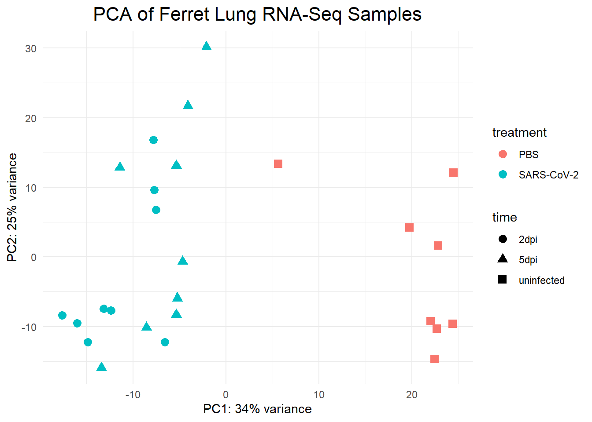
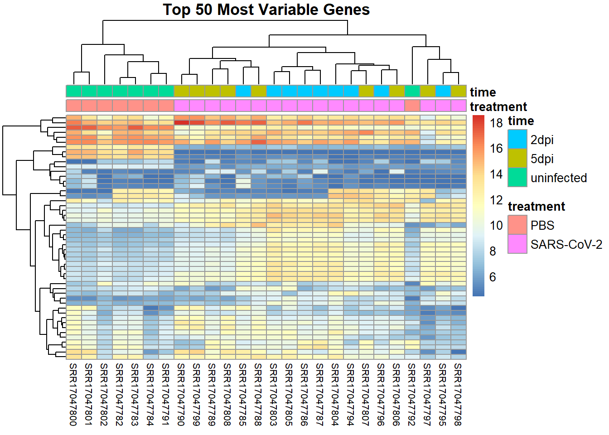
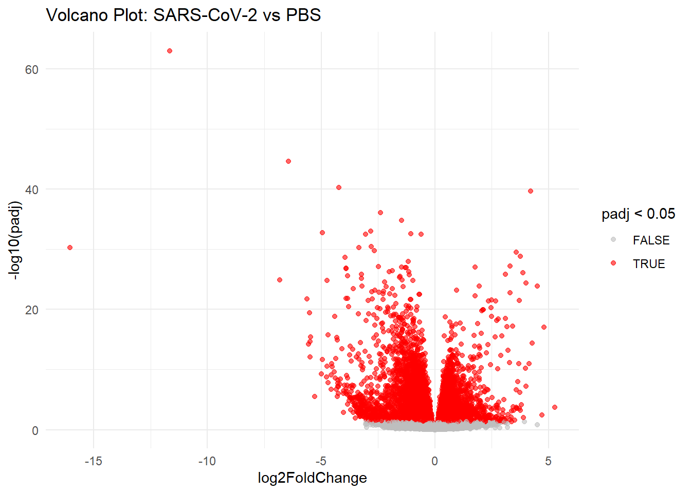
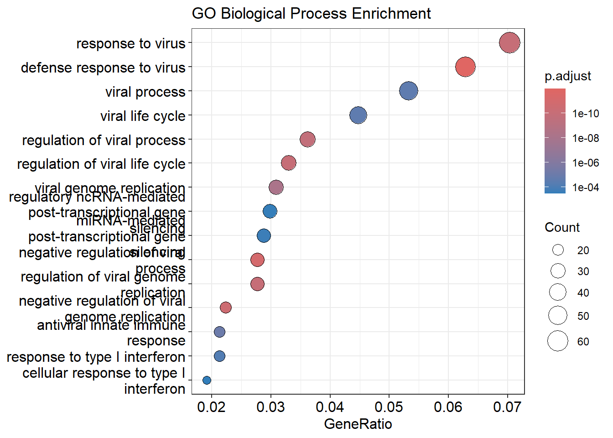
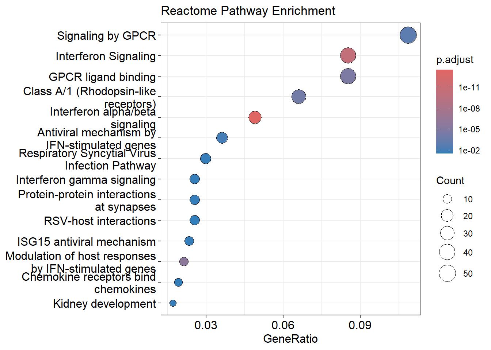

ISG_Final
Introduction
SARS-CoV-2 infection triggers a strong antiviral immune response, but the ways these responses vary across tissues and over the course of infection remain an important area of study. Animal models such as ferrets are widely used because their respiratory physiology and viral infection patterns resemble those of humans. Kim et al. (2022) generated an RNA-seq dataset to characterize how gene expression in ferret lung tissue changes over time following experimental SARS-CoV-2 infection. Their goal was to identify which host pathways become activated or suppressed during early, middle, and late infection stages.(Y.-I. Kim et al. 2022)
The purpose of my project was to reproduce the core analyses of this study using publicly available raw sequencing data (BioProject GSE189619) and to evaluate whether my independently generated results align with the published findings. This involved downloading the raw FASTQ files, completing a full RNA-seq pipeline (QC, alignment, quantification, differential expression analysis), and performing functional enrichment to interpret biological meaning. By re-analyzing this dataset, I aimed to validate the authors’ key conclusions and gain hands-on experience running a complete RNA-seq workflow.
Methods
All raw sequencing files were downloaded from the Sequence Read Archive (SRA; BioProject GSE189619). The dataset consists of paired-end Illumina NovaSeq reads from ferret lung tissue sampled at four infection time points (uninfected/PBS, 2 dpi, 5 dpi, and 14 dpi), with multiple biological replicates per group.
Reference genome
The ferret reference genome (MusPutFur1.0) and GTF annotation were downloaded from Ensembl (MusPutFur1.0 release 115). A HISAT2 index was built using hisat2-build v2.2.1(D. Kim et al. 2019).
Quality control
Quality control was performed using FastQC v0.12.1 (Andrews 2010) and summarized using MultiQC v1.15(Ewels et al. 2016). QC metrics included read quality profiles, adapter contamination checks, duplication levels, GC content, and overrepresented sequences.
Read alignment
Reads were aligned to the ferret genome using HISAT2 v2.2.1 with the RNA-seq–appropriate options (–dta, –rna-strandness RF). Samtools v1.20(li2009?; Li et al. 2009) was used to convert SAM → sorted BAM and create BAM indexes.
Quantification
Read counts per gene were generated using HTSeq-count v0.13.5(Anders, Pyl, and Huber 2014), using the flags -s reverse, -t exon, and -i gene_id. One sample (SRR17047793) produced a zero-length count file and was removed from further analysis.
Differential expression analysis
A DESeq2 dataset was constructed in R (DESeq2 v1.50.2)(Love, Huber, and Anders 2014) using treatment (SARS-CoV-2 vs PBS) as the design factor. Genes with a total count ≤10 were filtered out. The model was fitted using DESeq2’s standard negative binomial framework with independent filtering enabled. Results include log2 fold changes, Wald test p-values, and FDR-adjusted p-values.
Functional enrichment
Ferret ENSEMBL gene IDs were mapped to human orthologs using biomaRt (mpfuro_gene_ensembl → hsapiens_gene_ensembl). Gene Ontology (BP) and Reactome pathway enrichment were performed using clusterProfiler v4.18.2 (Yu et al. 2012) and ReactomePA v1.54.0 (Yu and He 2016).
All scripts, SLURM jobs, and outputs were organized in a reproducible project directory on the UConn Xanadu cluster.
Results
Quality control
Across all samples, FastQC showed consistently high read quality, with strong per-base quality scores and no adapter contamination detected. Read depth ranged from ~65–90 million paired reads per sample. Alignment success was also strong: HISAT2 reported ~80–86% overall alignment across all samples, which is typical for mammalian RNA-seq. Only one sample, SRR17047793, generated a corrupted 0-byte HTSeq file and was removed.
Exploratory data structure
A variance-stabilizing transformation (VST) was applied prior to PCA. The PCA plot showed clear separation between infected and uninfected samples along PC1, with earlier infection (2–5 dpi) shifting strongly in the SARS-CoV-2 direction. Replicates clustered tightly by group, indicating good batch consistency and no outlier samples after removing SRR17047793.
A heatmap of the top 50 most variable genes revealed strong grouping by infection time point and treatment, consistent with global immune activation and transcriptomic remodeling.

Differential expression
Out of 20,519 genes analyzed after filtering:
7,250 genes were significantly differentially expressed (padj < 0.05)
1,873 genes had |log2FC| > 1 and padj < 0.05
Top DEGs included strong antiviral/immune genes with very large fold changes (e.g., IFIT, OAS, ISG family members).
These results show a widespread transcriptional response to SARS-CoV-2 infection.
The volcano plot below visualizes the magnitude and statistical significance of all transcriptional changes. Each point represents a gene, plotted by its log2 fold change (horizontal axis) and its –log10 adjusted p-value (vertical axis). Genes highlighted in red correspond to those with padj < 0.05. The plot shows a broad distribution of significantly upregulated and downregulated genes, consistent with the large number of DEGs detected by DESeq2. Many genes exhibit large effect sizes (> |log2FC| of 1), which aligns with the strong antiviral and interferon-stimulated gene responses described in the original study. The symmetric “wings” of significant genes indicate a well-balanced dataset without bias toward one direction of fold change, further supporting the robustness of the differential expression results.

Functional enrichment
GO Biological Process enrichment showed highly significant activation of antiviral pathways, including:
Defense response to virus
Interferon alpha/beta signaling
Negative regulation of viral genome replication
Regulation of viral life cycle

Reactome pathways were similarly dominated by interferon-driven immune responses, including:
Interferon alpha/beta signaling
Interferon gamma signaling
ISG15 antiviral mechanism

Together, these enrichment results are exactly what is expected during viral infection and strongly match the original publication.
Discussion
The purpose of this analysis was to reproduce and explore the transcriptional response to SARS-CoV-2 infection in ferret lung tissue using publicly available RNA-seq data from Kim et al. (2022). Overall, the results of my workflow were highly consistent with the major biological conclusions presented in the original study, particularly the activation of antiviral and interferon-stimulated gene programs.
My differential expression analysis identified 7,250 significantly regulated genes (padj < 0.05), including more than 1,800 genes with strong expression changes (|log2FC| > 1). Many of the top DEGs—such as ISG15, OAS1, and IFI6—were interferon-stimulated genes that the authors highlighted as core markers of the ferret antiviral response. This agreement suggests that my alignment, quantification, and DESeq2 pipeline effectively captured the expected biological signal.
The dimensionality-reduction results further supported dataset quality. The PCA plot showed clear separation between SARS-CoV-2–infected ferrets and PBS controls, with samples also grouping by time point. This structured clustering indicates consistent biological effects across replicates and no obvious outlier samples. Similarly, the heatmap of the top 50 most variable genes demonstrated a strong division between infected and uninfected groups, mirroring the clustering patterns described in the manuscript.
Functional enrichment produced results that aligned closely with published findings. GO Biological Process enrichment revealed strong over-representation of antiviral pathways, including defense response to virus, negative regulation of viral process, and viral genome replication. Reactome analysis highlighted Interferon alpha/beta signaling, Interferon gamma signaling, and ISG15 antiviral mechanisms, all of which are hallmark pathways of coronavirus infection and were emphasized by the authors. These enrichment patterns reinforce that the differential expression landscape detected in my analysis reflects biologically meaningful responses.
One challenge encountered was the limited annotation available for Mustela putorius furo. Many databases do not directly support ferret gene identifiers, requiring an extra step in which ferret Ensembl IDs were mapped to human orthologs before enrichment. Although successful, this added complexity and explains why researchers frequently rely on human-ortholog annotations when analyzing ferret transcriptomes. Some tools (such as KEGG within clusterProfiler) do not support ferret at all, limiting the number of enrichment methods available.
Although the goal of this project was primarily reproducibility, the analysis also suggested a possible new insight: the overall transcriptional impact of SARS-CoV-2 infection in ferret lungs may be broader than what was explicitly emphasized in the original manuscript. While Kim et al. focused on key innate-immune pathways, my analysis detected over 7,000 statistically significant DEGs, indicating a potentially wider-ranging disruption of gene expression. Additionally, Reactome enrichment revealed exceptionally strong significance for interferon-related pathways (adjusted p-values as low as ~2.7×10⁻¹⁴), which may offer an expanded or more systematic view of pathway-level responses than what was directly reported in the paper. These differences likely reflect updated annotations, the use of a modern DESeq2 pipeline, and a more extensive enrichment workflow rather than any contradiction of the published results.
Despite annotation limitations, the core findings of the published study were successfully reproduced: SARS-CoV-2 infection induces a strong antiviral and interferon-mediated immune response in ferret lung tissue, with clear transcriptional separation between infected and control samples. The expanded analyses conducted here reinforce and extend those conclusions, demonstrating both the robustness of the dataset and the broader biological scope of the infection response.
References
Anders, Simon, Paul Theodor Pyl, and Wolfgang Huber. 2014. “HTSeqa Python Framework to Work with High-Throughput Sequencing Data.” Bioinformatics 31 (2): 166–69. https://doi.org/10.1093/bioinformatics/btu638.
Andrews, Simon. 2010. “FastQC: A Quality Control Tool for High Throughput Sequence Data.” https://www.bioinformatics.babraham.ac.uk/projects/fastqc/.
Ewels, Philip, Måns Magnusson, Sverker Lundin, and Max Käller. 2016. “MultiQC: Summarize Analysis Results for Multiple Tools and Samples in a Single Report.” Bioinformatics 32 (19): 3047–48. https://doi.org/10.1093/bioinformatics/btw354.
Kim, Daehwan, Joseph M. Paggi, Chanhee Park, Christopher Bennett, and Steven L. Salzberg. 2019. “Graph-Based Genome Alignment and Genotyping with HISAT2 and HISAT-Genotype.” Nature Biotechnology 37 (8): 907–15. https://doi.org/10.1038/s41587-019-0201-4.
Kim, Young-Il, Kwang-Min Yu, June-Young Koh, Eun-Ha Kim, Se-Mi Kim, Eun Ji Kim, Mark Anthony B. Casel, et al. 2022. “Age-Dependent Pathogenic Characteristics of SARS-CoV-2 Infection in Ferrets.” Nature Communications 13 (1). https://doi.org/10.1038/s41467-021-27717-3.
Li, Heng, Bob Handsaker, Alec Wysoker, Tim Fennell, Jue Ruan, Nils Homer, Gabor Marth, Goncalo Abecasis, and Richard Durbin. 2009. “The Sequence Alignment/Map Format and SAMtools.” Bioinformatics 25 (16): 2078–79. https://doi.org/10.1093/bioinformatics/btp352.
Love, Michael I, Wolfgang Huber, and Simon Anders. 2014. “Moderated Estimation of Fold Change and Dispersion for RNA-Seq Data with DESeq2.” Genome Biology 15 (12). https://doi.org/10.1186/s13059-014-0550-8.
Yu, Guangchuang, and Qing-Yu He. 2016. “ReactomePA: An R/Bioconductor Package for Reactome Pathway Analysis and Visualization.” Molecular BioSystems 12 (2): 477–79. https://doi.org/10.1039/c5mb00663e.
Yu, Guangchuang, Li-Gen Wang, Yanyan Han, and Qing-Yu He. 2012. “clusterProfiler: An R Package for Comparing Biological Themes Among Gene Clusters.” OMICS: A Journal of Integrative Biology 16 (5): 284–87. https://doi.org/10.1089/omi.2011.0118.